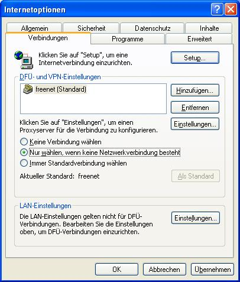

Proxy Einstellungen für Browser: Internet Explorer
JonDos empfiehlt den bereits fertig konfigurierten, portablen JonDoFox zum sicheren, anonymen Websurfen. Der Internet Explorer dagegen ist hinsichtlich Anonymität schlecht konfigurierbar und weniger sicher einzustufen als die meisten anderen Browser.
Um JonDo dennoch im Internet Explorer einzurichten gehen Sie folgendermaßen vor :
1.) Wählen Sie im Menü "Extras" das Untermenü "Internetoptionen...". Danach öffnet sich das Einstellungsfenster :
2.) Wählen Sie in diesem Fenster die Dialogseite "Verbindungen" aus.

3.1) Modem oder ISDN : Wenn Sie ein Modem zur Verbindung mit dem Internet benutzen wählen Sie unter DFÜ- und VPN-Einstellungen zuerst ihre Internetverbindung aus und klicken Sie dann auf die Schaltfläche "Einstellungen".
3.2) DSL oder direkte Verbindungen mit dem Internet : Wählen Sie unter "LAN-Einstellungen" die Schaltfläche "Einstellungen" aus.
4.) Aktivieren Sie in dem neu geöffnetem Fenster das Kontrollkästchen "Proxyserver für diese Verbindung verwenden" bzw. "Proxyserver für LAN verwenden" und tragen Sie als Proxyserver "127.0.0.1" und als Port 4001 ein :

Hinweis: Falls Sie im JonDo einen anderen Listenerport eingestellt haben müssen Sie diesen anstatt 4001 eintragen.
Wollen Sie Adressen festlegen, für die JonDo nicht verwendet werden soll, so klicken Sie auf die Schaltfläche Erweitert. Im Feld Ausnahmen können Sie, jeweils durch Semikolon getrennt, die gewünschten Adressen eingeben.
Beachten Sie bitte, dass solche Ausnahmen flexibler bei einem Filterproxy wie Proxomitron vorgenommen werden können.